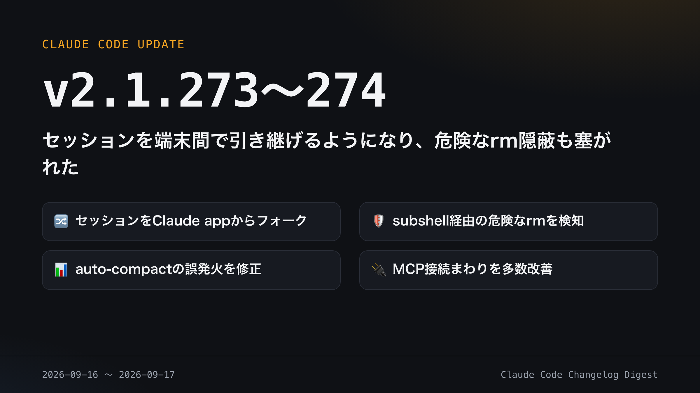

CLAUDE CODE CHANGELOG DIGEST
2026-09-16 〜 2026-09-17
セッションを端末間で引き継げるようになり、危険なrm隠蔽も塞がれた

外出先のClaude appから始めた作業を、手元PCのセッションとして続けられる
セッションのフォークに対応
claude --remote-controlや/remote-controlで始めたセッションを、Claude appからフォークできるようになった。フォーク後は手元PC上でバックグラウンドセッションとして続行される。
✨ 新規
v2.1.273: LLMゲートウェイ向けリクエストヘッダー追加
v2.1.273: MCPサーバー切断時の通知を追加
v2.1.273: セッションのフォークに対応
v2.1.274: メモリ逼迫時の警告表示を追加
v2.1.274: MCP起動待ち時間の上限を設定可能に
v2.1.274: チームメイト/エージェントの折りたたみメッセージをクリックで展開可能に
🔧 更新
v2.1.273: Bedrock/Vertex/Foundryのautoモードをローカル分類器優先に変更
v2.1.273: サインイン時にclaude.aiプラグインへのアクセスも要求するように変更
v2.1.274: MCPクライアントをv2・新プロトコルへ順次統一
v2.1.274: /code-reviewを軽量なインラインレビューに変更
v2.1.274: プラグイン取得時にGit LFSファイルをポインタのまま保持
🐛 修正
v2.1.273: bypassモードでsubshellに隠れた危険なrmを見逃す問題を修正
v2.1.273: コンテキストメーターが実際の約2倍でauto-compactしていた不具合を修正
v2.1.273: macOSでドラッグしたスクリーンショットをReadできない不具合を修正
v2.1.274: 壊れたtranscriptで無限リトライするバグを自己修復・明示エラー化
v2.1.274: 長時間セッションでのタイポガチェック遅延を修正
v2.1.274: 自動更新後に--model等のCLIオプションが失われる不具合を修正
🗑️ 廃止・利用不可
該当なし